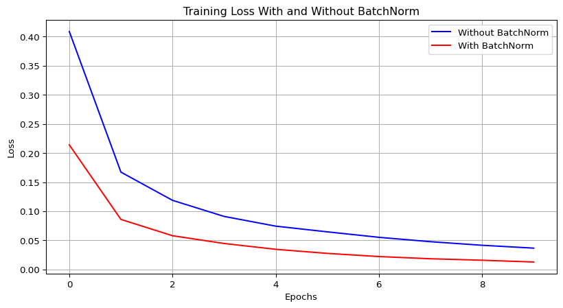

import numpy as np
def batch_norm(x, gamma, beta, eps=1e-5):
# x: input features for a mini-batch
# gamma, beta: scale and shift parameters
# eps: small constant for numerical stability
# Calculate batch mean and variance
batch_mean = np.mean(x, axis=0)
batch_var = np.var(x, axis=0)
# Normalize
x_norm = (x - batch_mean) / np.sqrt(batch_var + eps)
# Scale and shift
out = gamma * x_norm + beta
# Store cache for backward pass
cache = (x, x_norm, batch_mean, batch_var, gamma, beta, eps)
return out, cache12 Batch Normalization, RNN, Distributed Deep Learning and Tensorflow
12.1 Batch Normalization: A Comprehensive Guide
12.1.1 Introduction
Batch Normalization (BatchNorm or BN) is considered one of the most successful architectural innovations in deep learning history. Introduced by Sergey Ioffe and Christian Szegedy in their 2015 paper “Batch Normalization: Accelerating Deep Network Training by Reducing Internal Covariate Shift,” this technique has become a standard component in modern neural network architectures.
This document provides a comprehensive explanation of Batch Normalization, its mechanisms, benefits, and practical implementation in Python.
12.1.2 The Problem: Internal Covariate Shift
To understand why BatchNorm is valuable, we first need to understand the problem it addresses: internal covariate shift.
In deep neural networks, as data flows through many layers, the distribution of inputs to each layer continuously changes during training. This happens because the parameters of previous layers are constantly being updated. This phenomenon, called internal covariate shift, creates several challenges:
- It makes training unstable
- It requires lower learning rates
- It makes deeper networks harder to train
- It contributes to the vanishing/exploding gradient problem
12.1.2.1 An Analogy
Imagine you’re learning to catch a ball, but every time you try, someone changes the weight of the ball without telling you. Sometimes it’s as light as a tennis ball, sometimes as heavy as a bowling ball. This would make learning extremely difficult!
This is similar to what happens in neural networks: each layer keeps receiving inputs with different statistical distributions, making it hard for the layer to “learn” properly.
12.1.3 How Batch Normalization Works
Batch Normalization applies a transformation that maintains the mean output close to 0 and the output standard deviation close to 1. Here’s the step-by-step process:
- For each feature in a mini-batch, calculate the mean and variance
- Normalize the features by subtracting the mean and dividing by the standard deviation
- Scale and shift the normalized values using two learnable parameters (gamma and beta)
12.1.3.1 The Mathematical Formulation
For a mini-batch \(B = \{x_1, x_2, ..., x_m\}\), the BatchNorm transformation works as follows:
- Calculate mini-batch mean: \(\mu_B = \frac{1}{m}\sum_{i=1}^{m}x_i\)
- Calculate mini-batch variance: \(\sigma_B^2 = \frac{1}{m}\sum_{i=1}^{m}(x_i - \mu_B)^2\)
- Normalize: \(\hat{x_i} = \frac{x_i - \mu_B}{\sqrt{\sigma_B^2 + \epsilon}}\) (where \(\epsilon\) is a small constant for numerical stability)
- Scale and shift: \(y_i = \gamma\hat{x_i} + \beta\) (where \(\gamma\) and \(\beta\) are learnable parameters)
The parameters \(\gamma\) and \(\beta\) allow the network to learn the optimal scale and shift for each feature, which means it can even learn to “undo” the normalization if that’s optimal.
12.1.3.2 An Analogy for How it Works
Think of BatchNorm like a thermostat for each layer of your neural network. Just as a thermostat keeps room temperature stable despite changing outdoor conditions, BatchNorm keeps the statistical distribution of inputs to each layer stable despite changes in earlier layers.
12.1.4 Implementing Batch Normalization in Python
Let’s see how to implement BatchNorm in Python, both manually and using deep learning frameworks.
12.1.4.1 Manual Implementation
12.1.4.2 Using PyTorch
import torch
import torch.nn as nn
# Creating a model with BatchNorm
class NetWithBatchNorm(nn.Module):
def __init__(self):
super(NetWithBatchNorm, self).__init__()
self.fc1 = nn.Linear(784, 100)
self.bn1 = nn.BatchNorm1d(100)
self.fc2 = nn.Linear(100, 10)
def forward(self, x):
x = self.fc1(x)
x = self.bn1(x)
x = torch.relu(x)
x = self.fc2(x)
return x12.1.4.3 Using TensorFlow/Keras
import tensorflow as tf
from tensorflow.keras import layers, models
# Creating a model with BatchNorm
model = models.Sequential([
layers.Dense(100, input_shape=(784,)),
layers.BatchNormalization(),
layers.Activation('relu'),
layers.Dense(10)
])12.1.5 Key Benefits of Batch Normalization
12.1.5.1 1. Faster Training
BatchNorm allows us to use higher learning rates without the risk of divergence, leading to faster convergence. In some cases, training time can be reduced by a factor of 14x!
# Example showing faster convergence with BatchNorm
import matplotlib.pyplot as plt
import numpy as np
# Simulated training curves
epochs = np.arange(1, 21)
loss_without_bn = 1 / (1 + np.exp(epochs - 10)) + 0.1
loss_with_bn = 1 / (1 + np.exp(3 * (epochs - 5))) + 0.05
plt.figure(figsize=(10, 5))
plt.plot(epochs, loss_without_bn, 'b-', label='Without BatchNorm')
plt.plot(epochs, loss_with_bn, 'r-', label='With BatchNorm')
plt.xlabel('Epochs')
plt.ylabel('Loss')
plt.title('Training Convergence With and Without BatchNorm')
plt.legend()
plt.grid(True)12.1.5.2 2. Reduces the Vanishing Gradient Problem
By ensuring that the distribution of activations doesn’t shift too much, BatchNorm helps prevent the vanishing gradient problem, especially in deep networks.
12.1.5.3 3. Acts as a Regularizer
BatchNorm has a regularizing effect, reducing the need for other regularization techniques like Dropout.
# Example comparing dropout vs BatchNorm
class ModelWithDropout(nn.Module):
def __init__(self):
super(ModelWithDropout, self).__init__()
self.fc1 = nn.Linear(784, 100)
self.dropout = nn.Dropout(0.3)
self.fc2 = nn.Linear(100, 10)
def forward(self, x):
x = self.fc1(x)
x = torch.relu(x)
x = self.dropout(x)
x = self.fc2(x)
return x
# Sometimes using both can be beneficial
class ModelWithBothRegularizers(nn.Module):
def __init__(self):
super(ModelWithBothRegularizers, self).__init__()
self.fc1 = nn.Linear(784, 100)
self.bn1 = nn.BatchNorm1d(100)
self.dropout = nn.Dropout(0.1) # Lower dropout rate when used with BN
self.fc2 = nn.Linear(100, 10)
def forward(self, x):
x = self.fc1(x)
x = self.bn1(x)
x = torch.relu(x)
x = self.dropout(x)
x = self.fc2(x)
return x12.1.5.4 4. Reduces Sensitivity to Initialization
With BatchNorm, the network becomes less sensitive to the weight initialization scheme, making training more robust.
12.1.5.5 5. Eliminates Need for Input Standardization
If you add a BatchNorm layer as the first layer of your neural network, you don’t need to standardize your training set; the BatchNorm layer will do it for you.
12.1.6 Practical Considerations and Limitations
12.1.6.1 1. Batch Size Matters
BatchNorm calculates statistics over mini-batches, so it performs less effectively with very small batch sizes (e.g., batch size of 1 or 2).
import torch
import torch.nn as nn
import torch.optim as optim
from torch.utils.data import DataLoader, TensorDataset
# Define SimpleNet with BatchNorm
class SimpleNet(nn.Module):
def __init__(self):
super(SimpleNet, self).__init__()
self.fc1 = nn.Linear(10, 10) # Changed from 5 to 10 input features
self.bn = nn.BatchNorm1d(10) # BatchNorm on 10D output
self.fc2 = nn.Linear(10, 2) # 10 -> 2 output classes
self.relu = nn.ReLU()
def forward(self, x):
x = self.fc1(x)
x = self.bn(x) # Apply BatchNorm
x = self.relu(x)
x = self.fc2(x)
return x
def train_with_different_batch_sizes(train_data, batch_sizes=[16, 32, 64, 128], epochs=5):
results = []
device = torch.device("cuda" if torch.cuda.is_available() else "cpu")
for batch_size in batch_sizes:
# Create data loader with current batch size
train_loader = DataLoader(train_data, batch_size=batch_size, shuffle=True)
# Initialize model, loss, and optimizer
model = SimpleNet().to(device)
criterion = nn.CrossEntropyLoss()
optimizer = optim.SGD(model.parameters(), lr=0.01)
# Training loop
model.train()
for epoch in range(epochs):
for data, target in train_loader:
data, target = data.to(device), target.to(device)
optimizer.zero_grad()
output = model(data)
loss = criterion(output, target)
loss.backward()
optimizer.step()
# Simulate validation accuracy (here, final training loss as proxy)
total_loss = 0
with torch.no_grad():
for data, target in train_loader:
data, target = data.to(device), target.to(device)
output = model(data)
total_loss += criterion(output, target).item()
avg_loss = total_loss / len(train_loader)
results.append((batch_size, avg_loss))
print(f"Batch Size: {batch_size}, Avg Loss: {avg_loss:.4f}")
return results
# Example usage with synthetic data
X = torch.randn(1000, 10) # 1000 samples, 10 features
y = torch.randint(0, 2, (1000,)) # Binary labels
train_data = TensorDataset(X, y)
results = train_with_different_batch_sizes(train_data)Batch Size: 16, Avg Loss: 0.6948
Batch Size: 32, Avg Loss: 0.7007
Batch Size: 64, Avg Loss: 0.7129
Batch Size: 128, Avg Loss: 0.716212.1.6.2 2. Inference Mode Behavior
During training, BatchNorm uses mini-batch statistics. During inference, it uses running estimates of the mean and variance computed during training.
import torch
import torch.nn as nn
from torch.utils.data import DataLoader, TensorDataset
# Define SimpleNet with BatchNorm
class SimpleNet(nn.Module):
def __init__(self):
super(SimpleNet, self).__init__()
self.fc1 = nn.Linear(5, 10) # 5 input features -> 10
self.bn = nn.BatchNorm1d(10) # BatchNorm on 10D output
self.fc2 = nn.Linear(10, 2) # 10 -> 2 output classes
self.relu = nn.ReLU()
def forward(self, x):
x = self.fc1(x)
x = self.bn(x) # Apply BatchNorm
x = self.relu(x)
x = self.fc2(x)
return x
# Synthetic data
X_train = torch.randn(100, 5) # 100 samples, 5 features
y_train = torch.randint(0, 2, (100,)) # Binary labels
train_data = TensorDataset(X_train, y_train)
train_loader = DataLoader(train_data, batch_size=32, shuffle=True)
# Initialize model and optimizer
model = SimpleNet()
optimizer = torch.optim.SGD(model.parameters(), lr=0.01)
criterion = nn.CrossEntropyLoss()
# Training mode - uses batch statistics
model.train()
print("Training mode - BatchNorm uses batch statistics:")
for epoch in range(2): # Short training for demo
for data, target in train_loader:
optimizer.zero_grad()
output = model(data)
loss = criterion(output, target)
loss.backward()
optimizer.step()
# Print running stats after training
print(f"Epoch {epoch+1}, Running Mean: {model.bn.running_mean[:3]}...")
# Inference mode - uses running statistics
model.eval()
print("\nInference mode - BatchNorm uses running statistics:")
with torch.no_grad():
X_test = torch.randn(10, 5) # Test data
output = model(X_test)
print(f"Output for test data (first 3): {output[:3]}")
print(f"Running Mean (fixed): {model.bn.running_mean[:3]}...")Training mode - BatchNorm uses batch statistics:
Epoch 1, Running Mean: tensor([-0.0338, -0.0677, -0.1086])...
Epoch 2, Running Mean: tensor([ 0.0290, -0.1263, -0.1469])...
Inference mode - BatchNorm uses running statistics:
Output for test data (first 3): tensor([[ 0.5041, -0.6767],
[ 0.3027, -0.4218],
[ 0.3367, -0.3680]])
Running Mean (fixed): tensor([ 0.0290, -0.1263, -0.1469])...12.1.6.3 3. Challenges with RNNs
BatchNorm is tricky to use in Recurrent Neural Networks (RNNs) because of the recurrent structure and variable sequence lengths.
# Alternative to BatchNorm for RNNs: Layer Normalization
class RNNWithLayerNorm(nn.Module):
def __init__(self, input_size, hidden_size):
super(RNNWithLayerNorm, self).__init__()
self.rnn_cell = nn.RNNCell(input_size, hidden_size)
self.layer_norm = nn.LayerNorm(hidden_size)
def forward(self, x, hidden):
new_hidden = self.rnn_cell(x, hidden)
normalized_hidden = self.layer_norm(new_hidden)
return normalized_hidden12.1.6.4 4. Gradient Clipping for RNNs
As mentioned in the input, Gradient Clipping is often used with RNNs to mitigate the exploding gradients problem. BatchNorm doesn’t help much with this.
# Gradient clipping example
model = SimpleNet()
optimizer = torch.optim.Adam(model.parameters(), lr=0.001)
loss_function = nn.CrossEntropyLoss() # Define the loss function
# Training loop
for inputs, targets in train_loader:
# Forward pass
outputs = model(inputs)
loss = loss_function(outputs, targets)
# Backward pass
optimizer.zero_grad()
loss.backward()
# Gradient clipping (prevents exploding gradients)
torch.nn.utils.clip_grad_norm_(model.parameters(), max_norm=1.0)
# Update weights
optimizer.step()12.1.6.5 5. Computational Overhead
BatchNorm adds computational overhead to your neural network, making each epoch take longer to process.
12.1.7 Practical Examples
12.1.7.1 Example 1: MNIST Classification with and without BatchNorm
import torch
import torch.nn as nn
import torch.optim as optim
import torchvision
import torchvision.transforms as transforms
from torch.utils.data import DataLoader
# Load MNIST dataset
transform = transforms.Compose([transforms.ToTensor(), transforms.Normalize((0.5,), (0.5,))])
trainset = torchvision.datasets.MNIST(root='./data', train=True, download=True, transform=transform)
testset = torchvision.datasets.MNIST(root='./data', train=False, download=True, transform=transform)
trainloader = DataLoader(trainset, batch_size=64, shuffle=True)
testloader = DataLoader(testset, batch_size=64, shuffle=False)
# Model without BatchNorm
class NetWithoutBN(nn.Module):
def __init__(self):
super(NetWithoutBN, self).__init__()
self.fc1 = nn.Linear(28*28, 256)
self.fc2 = nn.Linear(256, 128)
self.fc3 = nn.Linear(128, 10)
def forward(self, x):
x = x.view(-1, 28*28)
x = torch.relu(self.fc1(x))
x = torch.relu(self.fc2(x))
x = self.fc3(x)
return x
# Model with BatchNorm
class NetWithBN(nn.Module):
def __init__(self):
super(NetWithBN, self).__init__()
self.fc1 = nn.Linear(28*28, 256)
self.bn1 = nn.BatchNorm1d(256)
self.fc2 = nn.Linear(256, 128)
self.bn2 = nn.BatchNorm1d(128)
self.fc3 = nn.Linear(128, 10)
def forward(self, x):
x = x.view(-1, 28*28)
x = self.fc1(x)
x = self.bn1(x)
x = torch.relu(x)
x = self.fc2(x)
x = self.bn2(x)
x = torch.relu(x)
x = self.fc3(x)
return x
# Training function
def train_model(model, trainloader, epochs=5, lr=0.01):
criterion = nn.CrossEntropyLoss()
optimizer = optim.SGD(model.parameters(), lr=lr, momentum=0.9)
for epoch in range(epochs):
running_loss = 0.0
for i, data in enumerate(trainloader, 0):
inputs, labels = data
optimizer.zero_grad()
outputs = model(inputs)
loss = criterion(outputs, labels)
loss.backward()
optimizer.step()
running_loss += loss.item()
print(f'Epoch {epoch+1}, Loss: {running_loss/len(trainloader):.3f}')
print('Finished Training')
# Training both models
model_without_bn = NetWithoutBN()
model_with_bn = NetWithBN()
print("Training model without BatchNorm:")
train_model(model_without_bn, trainloader)
print("\nTraining model with BatchNorm:")
train_model(model_with_bn, trainloader)Training model without BatchNorm:
Epoch 1, Loss: 0.413
Epoch 2, Loss: 0.169
Epoch 3, Loss: 0.121
Epoch 4, Loss: 0.094
Epoch 5, Loss: 0.080
Finished Training
Training model with BatchNorm:
Epoch 1, Loss: 0.211
Epoch 2, Loss: 0.087
Epoch 3, Loss: 0.061
Epoch 4, Loss: 0.043
Epoch 5, Loss: 0.037
Finished Training12.1.8 Example 2: Visual Comparison of Training Stability
import matplotlib.pyplot as plt
import numpy as np
import torch.nn.functional as F
# Function to train and record losses
def train_and_record(model, trainloader, epochs=10, lr=0.01):
criterion = nn.CrossEntropyLoss()
optimizer = optim.SGD(model.parameters(), lr=lr, momentum=0.9)
losses = []
for epoch in range(epochs):
epoch_losses = []
for data in trainloader:
inputs, labels = data
optimizer.zero_grad()
outputs = model(inputs)
loss = criterion(outputs, labels)
loss.backward()
optimizer.step()
epoch_losses.append(loss.item())
losses.append(np.mean(epoch_losses))
return losses
# Record losses for both models
losses_without_bn = train_and_record(NetWithoutBN(), trainloader)
losses_with_bn = train_and_record(NetWithBN(), trainloader)
# Plot results
plt.figure(figsize=(10, 5))
plt.plot(losses_without_bn, 'b-', label='Without BatchNorm')
plt.plot(losses_with_bn, 'r-', label='With BatchNorm')
plt.xlabel('Epochs')
plt.ylabel('Loss')
plt.title('Training Loss With and Without BatchNorm')
plt.legend()
plt.grid(True)
12.1.9 Understanding BatchNorm Intuitively
12.1.9.1 The Highway Analogy
Think of neural network training as a long highway with many cars (gradients) traveling from the output layer back to the input layer. Without BatchNorm, the traffic can get congested (vanishing gradients) or cars can speed out of control (exploding gradients).
BatchNorm acts like a series of traffic regulators placed at regular intervals along this highway. They ensure cars maintain a reasonable, consistent speed, preventing both traffic jams and dangerous racing. This allows for smoother, faster, and more stable journeys.
12.1.9.2 The Cooking Analogy
Another way to think about BatchNorm is in terms of cooking. Imagine you’re following a recipe that calls for “3 cups of flour.” But what if your cups are much larger or smaller than the ones the recipe author used?
BatchNorm is like having a standardized measuring system in your kitchen. It ensures that regardless of the “cup” size used in previous steps, each ingredient is measured and adjusted to a standard scale before being used in the next step of the recipe. This standardization makes the cooking process more robust to variations.
12.1.10 Conclusion
Batch Normalization has become an essential component in modern deep learning architectures due to its ability to accelerate training, improve stability, and enhance generalization. While it adds some computational overhead, the benefits typically far outweigh the costs.
Key takeaways: - BatchNorm stabilizes the distribution of layer inputs during training - It enables higher learning rates and faster convergence - It reduces the vanishing gradient problem - It has a regularizing effect - It works best with moderately-sized mini-batches - It requires special handling for RNNs
Understanding and properly implementing BatchNorm can significantly improve the performance of your deep learning models.
12.2 Recurrent Neural Networks: A Comprehensive Guide
12.2.1 Introduction
Recurrent Neural Networks (RNNs) are a class of neural networks specifically designed to handle sequential data and time series problems. Unlike traditional feedforward neural networks, RNNs have connections that form directed cycles, allowing them to maintain a “memory” of previous inputs. This makes them particularly well-suited for tasks where context and order matter, such as natural language processing, speech recognition, and time series forecasting.
This document provides a comprehensive explanation of RNNs, their architecture, training methodologies, and implementations in Python.
12.2.2 The Fundamental Concept of RNNs
12.2.2.1 The Problem with Traditional Neural Networks
Traditional feedforward neural networks have a significant limitation: they assume that all inputs (and outputs) are independent of each other. This assumption doesn’t hold for many real-world problems:
- In language, the meaning of a word depends on preceding words
- In time series data, past values influence future ones
- In videos, understanding a frame requires context from previous frames
12.2.2.2 The Solution: Recurrent Connections
RNNs address this limitation by introducing recurrent connections, allowing information to persist. A recurrent neuron:
- Maintains a memory or state from past computations
- Takes input from the current time step along with output from the previous time step
- Loops data back into the same neuron at every new time instant
12.2.2.3 An Analogy
Think of an RNN like a person reading a book. As you read each word, you don’t start from scratch - you carry forward your understanding of previous words and sentences. This accumulated context helps you understand the current word better. Similarly, an RNN carries forward information from previous time steps to better process the current input.
12.2.3 RNN Architecture
12.2.3.1 The Recurrent Neuron
The core building block of an RNN is the recurrent neuron. Unlike a standard neuron, a recurrent neuron has two sets of weights:
W_x: Weights applied to the current inputx_tW_h: Weights applied to the previous hidden state (or output)h_(t-1)
The recurrent neuron computes its current hidden state as:
\[h_t = \tanh(W_x \cdot x_t + W_h \cdot h_{t-1} + b)\]
Where: - h_t is the hidden state at time step t - x_t is the input at time step t - h_(t-1) is the hidden state from the previous time step - W_x, W_h are weight matrices - b is the bias term - tanh is a non-linear activation function (commonly used in RNNs)
12.2.3.2 Unfolded Computational Graph
To better understand how RNNs process sequential data, we can “unfold” the recurrent connections across time steps. This unfolded computational graph shows the flow of information through a recurrent layer at every time instant in the sequence.
For example, for a sequence of five time steps, we would unfold the recurrent neuron five times across the number of instants:
x_1 → RNN → h_1 → y_1
↓
x_2 → RNN → h_2 → y_2
↓
x_3 → RNN → h_3 → y_3
↓
x_4 → RNN → h_4 → y_4
↓
x_5 → RNN → h_5 → y_5This unfolding reveals that an RNN can be viewed as multiple copies of the same network, each passing information to its successor.
12.2.3.3 Computations within a Recurrent Layer
- Each neuron in a recurrent layer receives the output of the previous layer and its current input
- Neurons perform an affine transformation of inputs (matrix multiplication plus bias)
- This result is passed through a non-linear activation function (typically tanh)
- The output is then typically passed to a dense or fully connected layer with a softmax activation function to generate class probabilities
12.2.4 Recurrent Connection Schemes
There are two main schemes for forming recurrent connections from one recurrent layer to another:
12.2.5 RNN Applications for Sequence Problems
RNNs are versatile and can be applied to various sequence-related problems:
12.2.5.1 One-to-Many: An Input to a Sequence of Outputs
Example: Image Captioning - Input: A single image - Output: A sequence of words describing the image - The network must generate an entire sentence based on a single static input
# Pseudocode for image captioning RNN
def image_captioning_rnn(image):
# Extract features from image using CNN
image_features = cnn_encoder(image)
# Initialize RNN hidden state with image features
hidden_state = initial_transform(image_features)
# Generate caption word by word
caption = []
current_word = '<START>'
while current_word != '<END>' and len(caption) < max_length:
# Predict next word
output, hidden_state = rnn_cell(current_word, hidden_state)
current_word = get_most_probable_word(output)
caption.append(current_word)
return caption12.2.5.2 Many-to-One: A Sequence of Inputs to an Output
Example: Sentiment Analysis - Input: A sequence of words (a review or comment) - Output: A single classification (positive/negative sentiment) - The network must process the entire sequence before making a decision
# Pseudocode for sentiment analysis RNN
def sentiment_analysis_rnn(text_sequence):
# Initialize hidden state
hidden_state = initial_zero_state()
# Process each word in the sequence
for word in text_sequence:
word_embedding = embed(word)
hidden_state = rnn_cell(word_embedding, hidden_state)
# Final classification based on the last hidden state
sentiment = classifier(hidden_state)
return sentiment12.2.5.3 Many-to-Many (Synced): Synchronized Sequence Input to Output
Example: Video Classification (frame by frame) - Input: A sequence of video frames - Output: A label for each corresponding frame - The network processes each input and immediately produces the corresponding output
# Pseudocode for video frame classification
def video_frame_classification(video_frames):
# Initialize hidden state
hidden_state = initial_zero_state()
frame_labels = []
# Process each frame and generate corresponding label
for frame in video_frames:
frame_features = extract_features(frame)
hidden_state = rnn_cell(frame_features, hidden_state)
label = classifier(hidden_state)
frame_labels.append(label)
return frame_labels12.2.5.4 Many-to-Many (Encoder-Decoder): Sequence-to-Sequence Architecture
Example: Machine Translation - Input: A sequence of words in one language - Output: A sequence of words in another language - The network first encodes the entire input sequence, then generates the output sequence
# Pseudocode for sequence-to-sequence translation
def translate_sequence_to_sequence(source_sentence):
# Encoder phase
encoder_hidden_state = initial_zero_state()
for word in source_sentence:
word_embedding = embed_source(word)
encoder_hidden_state = encoder_rnn(word_embedding, encoder_hidden_state)
# Decoder phase
decoder_hidden_state = encoder_hidden_state
output_sentence = []
current_word = '<START>'
while current_word != '<END>' and len(output_sentence) < max_length:
word_embedding = embed_target(current_word)
output, decoder_hidden_state = decoder_rnn(word_embedding, decoder_hidden_state)
current_word = get_most_probable_word(output)
output_sentence.append(current_word)
return output_sentence12.2.6 Training Recurrent Neural Networks
12.2.6.1 Backpropagation Through Time (BPTT)
Standard backpropagation cannot work directly with recurrent structures due to their cyclic nature. Instead, RNNs are trained using Backpropagation Through Time (BPTT).
BPTT works by: 1. Unrolling the recurrent neuron across time instants 2. Applying backpropagation to the unrolled neurons at each time step, as if it were a very deep feedforward network 3. Accumulating gradients across time steps 4. Updating the weights based on these accumulated gradients
# Pseudocode for BPTT
def backpropagation_through_time(sequence, true_outputs, model):
# Forward pass
hidden_states = []
outputs = []
hidden_state = initial_zero_state()
for x_t in sequence:
hidden_state = rnn_cell_forward(x_t, hidden_state)
output = output_layer(hidden_state)
hidden_states.append(hidden_state)
outputs.append(output)
# Calculate loss
loss = calculate_loss(outputs, true_outputs)
# Backward pass (BPTT)
d_hidden = zero_gradient()
gradients = initialize_gradients()
for t in reversed(range(len(sequence))):
d_output = loss_gradient(outputs[t], true_outputs[t])
d_hidden += output_layer_backward(d_output)
dx, dh_prev, dW_gradients = rnn_cell_backward(d_hidden, hidden_states[t])
d_hidden = dh_prev
# Accumulate gradients
gradients = update_gradients(gradients, dW_gradients)
return loss, gradients12.2.6.2 Challenges in Training RNNs
12.2.6.2.1 The Vanishing and Exploding Gradient Problem
One of the major challenges in training RNNs is the vanishing and exploding gradient problem. This occurs because:
- During BPTT, gradients are multiplied by the same weight matrix repeatedly
- If the largest eigenvalue of this matrix is > 1, gradients explode
- If the largest eigenvalue is < 1, gradients vanish
This problem is particularly severe for long sequences, as the gradient either becomes extremely small (vanishing) or extremely large (exploding) after many time steps.
12.2.6.2.2 Solutions to Gradient Problems
Gradient Clipping: Limits the magnitude of gradients during training to prevent explosion
# Define a simple model model = tf.keras.Sequential([ tf.keras.layers.Input(shape=(5,)), # 5 features, preferred over input_shape tf.keras.layers.Dense(10, activation='relu'), tf.keras.layers.Dense(2) # 2 output classes ]) # Synthetic data X_train = np.random.randn(100, 5) # 100 samples, 5 features y_train = np.random.randint(0, 2, (100,)) # Binary labels train_data = tf.data.Dataset.from_tensor_slices((X_train, y_train)).batch(32) # Optimizer optimizer = tf.keras.optimizers.Adam(learning_rate=0.001) # Training loop for epoch in range(2): # Short demo for inputs, targets in train_data: with tf.GradientTape() as tape: outputs = model(inputs, training=True) # Compute mean loss across batch loss = tf.reduce_mean( tf.keras.losses.sparse_categorical_crossentropy(targets, outputs, from_logits=True) ) # Compute gradients gradients = tape.gradient(loss, model.trainable_variables) # Gradient clipping clipped_gradients, _ = tf.clip_by_global_norm(gradients, clip_norm=5.0) # Apply clipped gradients optimizer.apply_gradients(zip(clipped_gradients, model.trainable_variables)) print(f"Epoch {epoch+1}, Loss: {loss.numpy():.4f}")Epoch 1, Loss: 1.6372 Epoch 2, Loss: 1.5903Batch Normalization: Stabilizes the distribution of inputs to each layer
# Adding batch normalization to RNN x = BatchNormalization()(x) x = SimpleRNN(units=64)(x)ReLU Activation: Can help with the vanishing gradient problem
# Using ReLU instead of tanh in a custom RNN cell next_h = keras.activations.relu(np.dot(x_t, Wx) + np.dot(prev_h, Wh) + b)Long Short-Term Memory (LSTM): A special type of RNN designed to handle long-term dependencies
Despite these solutions, the limitations of basic RNNs with long-term dependencies led to the development of more sophisticated architectures, particularly the Long Short-Term Memory (LSTM) cell, which we’ll discuss in another document.
12.2.7 Implementing RNNs in Python
12.2.7.1 Simple RNN Implementation in TensorFlow/Keras
Here’s how to implement a basic RNN using TensorFlow’s built-in SimpleRNN layer:
import tensorflow as tf
import numpy as np
from tensorflow.keras.models import Sequential
from tensorflow.keras.layers import SimpleRNN, Dense, Embedding
# Example: Sentiment Analysis with SimpleRNN
def build_sentiment_model(vocab_size, embedding_dim, max_length):
model = Sequential([
Embedding(vocab_size, embedding_dim, input_length=max_length),
SimpleRNN(64), # 64 units in the RNN layer
Dense(1, activation='sigmoid') # Binary classification (positive/negative)
])
model.compile(
optimizer='adam',
loss='binary_crossentropy',
metrics=['accuracy']
)
return model
# Example: Using SimpleRNN with different configurations
# By default, SimpleRNN only returns the final hidden state
inputs = np.random.random([32, 10, 8]).astype(np.float32) # Batch size=32, seq_length=10, input_dim=8
simple_rnn = tf.keras.layers.SimpleRNN(4) # 4 RNN units
output = simple_rnn(inputs) # Output shape is [32, 4]
# To get the entire sequence output and final state
simple_rnn_full = tf.keras.layers.SimpleRNN(
4, return_sequences=True, return_state=True)
whole_sequence_output, final_state = simple_rnn_full(inputs)
# whole_sequence_output shape: [32, 10, 4]
# final_state shape: [32, 4]12.2.7.2 A More Complex RNN Example: Text Generation
import tensorflow as tf
import numpy as np
from tensorflow.keras.models import Sequential
from tensorflow.keras.layers import SimpleRNN, Dense, Embedding
from tensorflow.keras.preprocessing.text import Tokenizer
from tensorflow.keras.preprocessing.sequence import pad_sequences
# Example text data
texts = [
"I love machine learning",
"RNNs are great for sequential data",
"Natural language processing is fascinating",
"Deep learning models can solve complex problems"
]
# Tokenize the text
tokenizer = Tokenizer()
tokenizer.fit_on_texts(texts)
vocab_size = len(tokenizer.word_index) + 1
# Prepare training data for text generation
sequences = []
for text in texts:
# Convert text to sequence of integers
encoded = tokenizer.texts_to_sequences([text])[0]
# Create input-output pairs for each position in the sequence
for i in range(1, len(encoded)):
sequences.append(encoded[:i+1])
# Pad sequences to the same length
max_length = max([len(seq) for seq in sequences])
padded_sequences = pad_sequences(sequences, maxlen=max_length, padding='pre')
# Split into input (X) and output (y)
X = padded_sequences[:, :-1]
y = tf.keras.utils.to_categorical(padded_sequences[:, -1], num_classes=vocab_size)
# Build the model
model = Sequential([
Embedding(vocab_size, 10, input_length=max_length-1),
SimpleRNN(64, return_sequences=False),
Dense(vocab_size, activation='softmax')
])
model.compile(
optimizer='adam',
loss='categorical_crossentropy',
metrics=['accuracy']
)
# Function to generate text
def generate_text(seed_text, model, tokenizer, max_length, num_words=10):
result = seed_text
for _ in range(num_words):
# Encode the text
encoded = tokenizer.texts_to_sequences([result])[0]
# Pad the sequence
padded = pad_sequences([encoded], maxlen=max_length-1, padding='pre')
# Predict the next word
prediction = model.predict(padded, verbose=0)
index = np.argmax(prediction)
# Convert the index to a word
word = ""
for key, value in tokenizer.word_index.items():
if value == index:
word = key
break
# Append the word to the result
result += " " + word
return result12.2.8 Understanding RNNs Visually
12.2.8.1 The Chain Analogy
A helpful way to visualize an RNN is to think of it as a chain. Each link in the chain represents a time step, and information flows from one link to the next. The strength of the chain depends on how well information can flow through it:
- In traditional RNNs, the links can weaken over long distances (vanishing gradients)
- Special RNN architectures like LSTMs strengthen these links to allow information to flow more easily across long distances
12.2.8.2 The Memory Analogy
Another useful analogy is to think of an RNN as a person with a notepad:
- At each time step, the person receives new information (input)
- They update their notes (hidden state) based on what they already wrote and the new information
- They can choose what to remember (strong weights) and what to forget (weak weights)
- Their final understanding (output) depends on what they’ve accumulated in their notes
This analogy helps explain why RNNs can struggle with very long sequences - just as a person’s notes might become cluttered or they might forget early details, an RNN’s ability to maintain relevant information degrades over long sequences.
12.2.9 Practical Considerations
12.2.9.1 When to Use RNNs
RNNs are particularly useful for:
- Sequential or time-series data where order matters
- Natural language processing tasks (text generation, sentiment analysis)
- Speech recognition
- Time series forecasting
- Video analysis
12.2.9.2 Limitations of Simple RNNs
Basic RNNs have several limitations:
- They struggle with long-term dependencies due to vanishing/exploding gradients
- Training can be slow due to the sequential nature (difficult to parallelize)
- They may not capture complex patterns as effectively as more advanced architectures
12.2.9.3 Advanced RNN Architectures
Because of these limitations, more sophisticated architectures have been developed:
- Long Short-Term Memory (LSTM): Addresses the vanishing gradient problem with special gates
- Gated Recurrent Unit (GRU): A simplified version of LSTM with fewer parameters
- Bidirectional RNNs: Process sequences in both forward and backward directions
- Deep RNNs: Stack multiple RNN layers for more complex representations
12.2.10 Conclusion
Recurrent Neural Networks represent a powerful class of neural network architectures specifically designed for sequential data. By maintaining state information across time steps, they can capture temporal dependencies and patterns that traditional feedforward networks cannot.
While basic RNNs face challenges with long-term dependencies, techniques like gradient clipping and advanced architectures like LSTMs have helped overcome these limitations. Today, RNNs and their variants form the backbone of many state-of-the-art systems in natural language processing, speech recognition, and time series analysis.
Key takeaways: - RNNs maintain memory of past inputs through recurrent connections - They can be unfolded across time steps and trained with BPTT - They face challenges with vanishing and exploding gradients - They’re suitable for various sequence-to-sequence tasks - Advanced variants like LSTMs improve their ability to capture long-term dependencies
Understanding and implementing RNNs provides a foundation for working with sequential data across numerous application domains.
12.3 Deep Learning Frameworks
Deep Learning frameworks are designed to abstract away complex mathematical operations, allowing developers and researchers to focus on the architecture and design of neural networks rather than implementation details.
12.3.1 Popular Deep Learning Frameworks
Several frameworks have emerged as leaders in the deep learning ecosystem:
- TensorFlow/Keras (Google): One of the most widely used frameworks with strong industry adoption
- PyTorch: Developed by Facebook’s AI Research lab, known for its dynamic computation graph
- Caffe: Berkeley Vision and Learning Center’s framework focused on expressiveness, speed, and modularity
- Microsoft Cognitive Toolkit (CNTK): Microsoft’s open-source toolkit optimized for performance
# TensorFlow/Keras example
import tensorflow as tf
from tensorflow import keras
# Create a simple model
model = keras.Sequential([
keras.layers.Dense(128, activation='relu', input_shape=(784,)),
keras.layers.Dropout(0.2),
keras.layers.Dense(10, activation='softmax')
])
# Compile the model
model.compile(optimizer='adam',
loss='sparse_categorical_crossentropy',
metrics=['accuracy'])# PyTorch example
import torch
import torch.nn as nn
import torch.nn.functional as F
# Define a simple neural network
class SimpleNet(nn.Module):
def __init__(self):
super(SimpleNet, self).__init__()
self.fc1 = nn.Linear(784, 128)
self.dropout = nn.Dropout(0.2)
self.fc2 = nn.Linear(128, 10)
def forward(self, x):
x = F.relu(self.fc1(x))
x = self.dropout(x)
x = self.fc2(x)
return F.log_softmax(x, dim=1)
# Create an instance of the network
model = SimpleNet()12.3.2 Evolution of Neural Network Architectures
The field has seen significant evolution in neural network architectures over the years:
- LeNet (1998): One of the earliest convolutional neural networks, designed for handwritten digit recognition
- AlexNet (2012): A deeper CNN that won the ImageNet competition and laid the groundwork for VGG and ResNet
- ResNet-50 (2015): Introduced residual connections to solve the vanishing gradient problem in very deep networks
- Transformer (2017): Revolutionized NLP with its attention mechanism, forming the basis for models like BERT and GPT
# Example of ResNet-50 implementation
import tensorflow as tf
from tensorflow.keras.applications import ResNet50
# Load pre-trained ResNet-50
resnet_model = ResNet50(weights='imagenet', include_top=True)
# Example prediction
from tensorflow.keras.preprocessing import image
from tensorflow.keras.applications.resnet50 import preprocess_input, decode_predictions
import numpy as np
img_path = 'elephant.jpg'
img = image.load_img(img_path, target_size=(224, 224))
x = image.img_to_array(img)
x = np.expand_dims(x, axis=0)
x = preprocess_input(x)
preds = resnet_model.predict(x)
print('Predicted:', decode_predictions(preds, top=3)[0])12.4 Model Training Approaches
12.4.1 Model Training Steps
The training process for deep learning models typically involves three main steps:
- Building a computational graph from the network definition
- Inputting training data and computing a loss function
- Updating parameters based on gradients
12.4.2 Training Paradigms
Two main paradigms exist for training deep learning models:
12.4.2.1 Define-and-Run
Frameworks like TensorFlow (traditional) and Caffe complete step one (building the computational graph) in advance of step two (inputting data). This means:
- The entire computational graph is defined before any data flows through
- Optimization can be performed on the graph before execution
- Less flexibility during runtime but potentially better performance
12.4.2.2 Define-by-Run
Frameworks like PyTorch combine steps one and two into a single step. This means:
- The computational graph is not given before training but is built dynamically during training
- More intuitive for debugging and experimentation
- Greater flexibility at runtime
# Define-and-run example (Traditional TensorFlow)
import tensorflow as tf
# Define the graph
a = tf.constant(5.0)
b = tf.constant(6.0)
c = a * b
# Execute the graph
with tf.Session() as sess:
result = sess.run(c)
print(result) # 30.0# Define-by-run example (PyTorch)
import torch
a = torch.tensor(5.0)
b = torch.tensor(6.0)
c = a * b
print(c.item()) # 30.0
Note
Analogy: Think of “define-and-run” like creating a blueprint for a house before building it. Everything is planned in advance, and then executed according to the plan. “Define-by-run” is more like building a house room by room, making decisions as you go.
12.4.3 ONNX: Open Neural Network eXchange
ONNX is an open-source shared model representation for framework interoperability:
- Provides a common file format for deep learning models
- Defines a common set of operators and data types
- Enables developers to use models with various frameworks, tools, runtimes, and compilers
- Supports an extensible computation graph model (including TensorFlow support)
# Example of exporting a PyTorch model to ONNX
import torch
import torchvision
# Load a pre-trained model
dummy_input = torch.randn(1, 3, 224, 224)
model = torchvision.models.resnet18(pretrained=True)
# Export to ONNX
torch.onnx.export(model, # model being run
dummy_input, # model input (or a tuple for multiple inputs)
"resnet18.onnx", # where to save the model
export_params=True, # store the trained parameter weights inside the model file
opset_version=10, # the ONNX version to export the model to
do_constant_folding=True, # whether to execute constant folding for optimization
input_names = ['input'], # the model's input names
output_names = ['output']) # the model's output names12.5 Distributed Machine Learning
12.5.1 Non-Distributed vs. Distributed Approach
12.5.1.1 Non-Distributed ML
In the standard (non-distributed) approach: - A single machine loads the entire model - All training data is processed on this single machine - Limited by the computational resources of a single node
12.5.1.2 Distributed ML
In distributed approaches: - Multiple machines work together to train a model - Can use data parallelism, model parallelism, or hybrid approaches - Scales to much larger models and datasets
12.5.2 Parallelization Methods in Distributed Deep Learning
There are three main parallelization strategies:
12.5.2.1 1. Data Parallelism
- Multiple machines load identical copies of the DL model
- Training data is split into non-overlapping chunks
- Each worker performs training on its chunk of data
- Model parameters need to be synchronized between workers
# PyTorch Distributed Data Parallel example
import torch
import torch.distributed as dist
import torch.nn as nn
import torch.multiprocessing as mp
from torch.nn.parallel import DistributedDataParallel as DDP
def setup(rank, world_size):
dist.init_process_group("gloo", rank=rank, world_size=world_size)
def cleanup():
dist.destroy_process_group()
class ToyModel(nn.Module):
def __init__(self):
super(ToyModel, self).__init__()
self.net = nn.Linear(10, 2)
def forward(self, x):
return self.net(x)
def demo_basic(rank, world_size):
setup(rank, world_size)
# Create model and move it to GPU with id rank
model = ToyModel().to(rank)
ddp_model = DDP(model, device_ids=[rank])
loss_fn = nn.MSELoss()
optimizer = torch.optim.SGD(ddp_model.parameters(), lr=0.001)
# Forward pass
outputs = ddp_model(torch.randn(20, 10).to(rank))
labels = torch.randn(20, 2).to(rank)
# Backward pass
loss = loss_fn(outputs, labels)
loss.backward()
# Update parameters
optimizer.step()
cleanup()
def run_demo(demo_fn, world_size):
mp.spawn(demo_fn, args=(world_size,), nprocs=world_size, join=True)
Note
Analogy: Data parallelism is like having multiple chefs preparing the same dish using the same recipe but with different ingredients. At the end, they share their experiences to improve the recipe.
12.5.2.2 2. Model Parallelism
- The DL model is split across workers, with each worker loading a different part
- Workers holding the input layer receive training data
- In the forward pass, output signals are propagated to workers holding the next layer
- In backpropagation, gradients flow from output to input layer workers
# Simple model parallelism example (conceptual)
import torch
import torch.nn as nn
# Define a model that will be split across two devices
class SplitModel(nn.Module):
def __init__(self):
super(SplitModel, self).__init__()
# First part of the model on GPU 0
self.part1 = nn.Sequential(
nn.Linear(1000, 512),
nn.ReLU(),
nn.Linear(512, 256)
).to('cuda:0')
# Second part of the model on GPU 1
self.part2 = nn.Sequential(
nn.Linear(256, 128),
nn.ReLU(),
nn.Linear(128, 10)
).to('cuda:1')
def forward(self, x):
# Input is on GPU 0
x = x.to('cuda:0')
x = self.part1(x)
# Transfer intermediate output to GPU 1
x = x.to('cuda:1')
return self.part2(x)
# Create the model
split_model = SplitModel()
# Example input data
input_data = torch.randn(64, 1000) # Batch size 64, input dim 1000
# Forward pass
output = split_model(input_data)
Note
Analogy: Model parallelism is like an assembly line in a factory, where each worker specializes in one part of the process. The partially completed product moves from worker to worker until it’s finished.
12.5.2.3 3. Pipeline Parallelism
- A hybrid approach that combines aspects of both data and model parallelism
- The model is split into stages that run on different devices
- Multiple batches of data are processed simultaneously in different pipeline stages
- Reduces idle time compared to pure model parallelism
Note
Analogy: Pipeline parallelism is like a car wash with multiple stations (soap, rinse, dry). While one car is being rinsed, another can be getting soaped, and a third can be drying, making the whole process more efficient.
12.5.3 Synchronization Strategies
When using data parallelism, parameter synchronization is crucial:
- Synchronous SGD: All workers wait for each other before updating parameters
- More stable training but potentially slower
- Asynchronous SGD: Workers update parameters independently
- Faster but can lead to inconsistent updates
# TensorFlow distributed strategy example
import tensorflow as tf
# Create a strategy for data parallelism
strategy = tf.distribute.MirroredStrategy()
# Create the model inside the strategy scope
with strategy.scope():
model = tf.keras.Sequential([
tf.keras.layers.Dense(256, activation='relu', input_shape=(784,)),
tf.keras.layers.Dropout(0.2),
tf.keras.layers.Dense(10, activation='softmax')
])
model.compile(optimizer='adam',
loss='sparse_categorical_crossentropy',
metrics=['accuracy'])
# Train the model (automatically handled in distributed way)
model.fit(train_dataset, epochs=10)12.5.4 Conclusion
12.6 Introduction to TensorFlow
TensorFlow is a powerful, open-source machine learning framework developed by the Google Brain Team. This document provides a comprehensive overview of TensorFlow, its architecture, and how to use it effectively for machine learning and deep learning projects.
12.6.1 What is TensorFlow?
TensorFlow (tf) is an end-to-end open-source platform for machine learning that provides:
- A comprehensive ecosystem of tools, libraries, and community resources
- Flexible architecture that allows deployment across various platforms (CPU, GPU, TPU)
- High-level APIs like Keras for easy model building
- Low-level APIs for advanced research and development
Analogy: Think of TensorFlow as a sophisticated construction kit for building AI systems. Like LEGO blocks that snap together to create complex structures, TensorFlow provides building blocks (operations) that connect together to form computational graphs that power machine learning models.
# Simple TensorFlow example
import tensorflow as tf
# Basic operation
result = tf.add(1, 2).numpy()
print(f"1 + 2 = {result}")1 + 2 = 312.6.2 Core Concept: Tensors
The name “TensorFlow” comes from the core data structure it operates on - tensors that flow through a computational graph.
What is a Tensor? - A tensor is a generalization of vectors and matrices to potentially higher dimensions - Tensors are multi-dimensional arrays with a uniform type (called a dtype) - They are similar to NumPy’s ndarray objects but with additional capabilities, particularly GPU acceleration
Analogy: If a scalar is a point (0D), a vector is a line (1D), and a matrix is a grid (2D), then tensors are multi-dimensional grids (3D, 4D, etc.). Think of a tensor as a container that can hold data in various shapes - like nesting Russian dolls of different dimensions.
# Creating tensors in TensorFlow
import tensorflow as tf
import numpy as np
# From Python objects
scalar = tf.constant(42)
vector = tf.constant([1, 2, 3])
matrix = tf.constant([[1, 2], [3, 4]])
tensor_3d = tf.constant([[[1, 2], [3, 4]], [[5, 6], [7, 8]]])
# From NumPy arrays
np_array = np.array([[1, 2], [3, 4]])
tensor_from_np = tf.constant(np_array)
# Check shapes
print(f"Scalar shape: {scalar.shape}")
print(f"Vector shape: {vector.shape}")
print(f"Matrix shape: {matrix.shape}")
print(f"3D Tensor shape: {tensor_3d.shape}")12.6.3 TensorFlow’s Architecture
TensorFlow’s architecture is designed to facilitate both research and production deployment.
12.6.3.1 Key Architectural Features:
- Computation Graphs: TensorFlow represents computations as graphs where:
- Nodes are operations (ops)
- Edges are tensors that flow between operations
- Eager Execution: Modern TensorFlow uses eager execution by default:
- Operations are evaluated immediately
- Makes debugging and development more intuitive
- Can be disabled for graph-based execution when needed
- Distribution Strategy: TensorFlow can distribute computation across:
- Multiple CPUs
- Multiple GPUs
- TPUs (Tensor Processing Units)
- Clusters of machines
Analogy: TensorFlow’s architecture is like a factory assembly line. Raw materials (input data) enter the factory, go through various specialized stations (operations) that transform them, and finally emerge as finished products (output predictions). The factory layout (computational graph) determines how everything flows, and TensorFlow’s execution engine acts as the factory manager, coordinating all the stations to run efficiently.
# TensorFlow execution modes
import tensorflow as tf
# Eager execution (default in TF 2.x)
print("Eager execution enabled:", tf.executing_eagerly())
# Basic operations execute immediately
a = tf.constant([[1, 2], [3, 4]])
b = tf.constant([[5, 6], [7, 8]])
c = tf.matmul(a, b)
print("Matrix multiplication result:\n", c.numpy())
# Graph-based execution (for performance optimization)
@tf.function
def graph_function(x, y):
return tf.matmul(x, y)
# This will be compiled into a graph for faster execution
result = graph_function(a, b)
print("Graph function result:\n", result.numpy())12.6.4 TensorFlow’s Python API
TensorFlow provides a rich Python API that allows users to build and train models at different levels of abstraction.
12.6.4.1 API Hierarchy:
- Low-Level API: Core TensorFlow operations
- Direct tensor manipulation
- Fine-grained control over computation
- Used for research and advanced applications
- Mid-Level API: tf.Module, layers, etc.
- Building blocks for creating models
- Provides more structure than raw tensors
- High-Level API: tf.keras
- Complete ML toolkit for building and training models
- Easy to use and quick to prototype with
- Supports multiple backends (though primarily used with TensorFlow)
Analogy: TensorFlow’s API hierarchy is like learning to drive. The high-level API (Keras) is like driving an automatic car with cruise control - it handles most details for you. The mid-level API is like driving a manual transmission - more control but requires more knowledge. The low-level API is like building your own car from parts - complete freedom but requires extensive expertise.
# Different API levels example
import tensorflow as tf
# Low-level API example
def low_level_model(inputs):
weights = tf.Variable(tf.random.normal([784, 10]))
biases = tf.Variable(tf.zeros([10]))
return tf.matmul(inputs, weights) + biases
# Mid-level API using layers
class MidLevelModel(tf.Module):
def __init__(self):
super().__init__()
self.dense = tf.keras.layers.Dense(10)
def __call__(self, inputs):
return self.dense(inputs)
# High-level API using Keras
high_level_model = tf.keras.Sequential([
tf.keras.layers.Flatten(input_shape=(28, 28)),
tf.keras.layers.Dense(128, activation='relu'),
tf.keras.layers.Dropout(0.2),
tf.keras.layers.Dense(10, activation='softmax')
])12.6.5 TensorFlow vs. NumPy
TensorFlow’s core functionality is similar to NumPy, but with several key advantages:
- GPU/TPU Support: Accelerated computation on specialized hardware
- Automatic Differentiation: Automatic calculation of gradients for training
- Distributed Computing: Built-in support for multi-device computation
- Graph Optimization: Computation graphs can be optimized for performance
- Deployment Options: Models can be exported to various formats for deployment
Analogy: NumPy is like a calculator that can perform complex math, while TensorFlow is like a programmable, parallel supercomputer. Both can do similar operations, but TensorFlow is designed to scale those operations across multiple computing devices efficiently.
# NumPy vs TensorFlow comparison
import numpy as np
import tensorflow as tf
import time
# Create large matrices
size = 5000
np_matrix = np.random.random((size, size))
tf_matrix = tf.random.uniform((size, size))
# Compare matrix multiplication performance
start_time = time.time()
np_result = np.matmul(np_matrix, np_matrix)
np_time = time.time() - start_time
print(f"NumPy matrix multiplication time: {np_time:.4f} seconds")
start_time = time.time()
tf_result = tf.matmul(tf_matrix, tf_matrix)
# Force execution to complete
_ = tf_result.numpy()
tf_time = time.time() - start_time
print(f"TensorFlow matrix multiplication time: {tf_time:.4f} seconds")
print(f"Speedup: {np_time/tf_time:.2f}x")12.6.6 Computational Graphs in TensorFlow
The computational graph is a core concept in TensorFlow. It represents a series of TensorFlow operations arranged as nodes in a directed graph.
12.6.6.1 Key Components of Computational Graphs:
- Operations (ops): Nodes in the graph that perform computations
- Tensors: Edges in the graph that carry data between operations
- Variables: Special operations that maintain state across executions
- Placeholders (TF 1.x): Entry points for feeding data
Analogy: A computational graph is like a recipe. The ingredients are tensors, the preparation steps are operations, cooking tools that remain on your counter are variables, and the serving dishes are outputs. Just as a chef can optimize a recipe by changing the order of steps or using different tools, TensorFlow can optimize a computational graph for efficiency.
# Simple computational graph example
import tensorflow as tf
# In TF 2.x, we can use tf.function to create graphs
@tf.function
def simple_graph(x):
# MatMul operation
W = tf.Variable(tf.random.uniform((784, 100), -1, 1))
# Add operation
b = tf.Variable(tf.zeros(100))
# ReLU operation
h = tf.nn.relu(tf.matmul(x, W) + b)
return h
# Create input
x = tf.random.normal((1, 784))
# Execute the graph
result = simple_graph(x)
print(f"Result shape: {result.shape}")
# We can visualize the graph using TensorBoard
# (Code for visualization would go here)12.6.7 How TensorFlow Works
TensorFlow operates by building and executing computational graphs. Here’s a simplified view of how it works:
- Define the computational graph:
- Create tensors, variables, and operations
- Connect operations to form a graph
- Execute the graph:
- In TF 2.x, with eager execution, operations are executed immediately
- With
@tf.function, Python code is converted to a graph for faster execution
- Optimize parameters:
- Use automatic differentiation to compute gradients
- Update variables with optimizers
- Deploy the model:
- Export the graph for inference
- Serve the model in production
Analogy: The process is like designing, building, and operating a factory. First, you design the factory layout (define the graph). Then you build the machinery (initialize variables). Next, you start production (execute the graph). Finally, you optimize the production line based on feedback (training with gradients).
# Complete TensorFlow workflow example
import tensorflow as tf
# 1. Create a dataset
mnist = tf.keras.datasets.mnist
(x_train, y_train), (x_test, y_test) = mnist.load_data()
x_train, x_test = x_train / 255.0, x_test / 255.0 # Normalize data
# 2. Define the model
model = tf.keras.models.Sequential([
tf.keras.layers.Flatten(input_shape=(28, 28)),
tf.keras.layers.Dense(128, activation='relu'),
tf.keras.layers.Dropout(0.2),
tf.keras.layers.Dense(10)
])
# 3. Define loss function
loss_fn = tf.keras.losses.SparseCategoricalCrossentropy(from_logits=True)
# 4. Compile the model
model.compile(optimizer='adam',
loss=loss_fn,
metrics=['accuracy'])
# 5. Train the model
model.fit(x_train, y_train, epochs=5)
# 6. Evaluate the model
model.evaluate(x_test, y_test, verbose=2)
# 7. Save the model for deployment
model.save('my_mnist_model')12.6.8 TensorFlow’s Execution Framework
TensorFlow’s execution framework is designed to efficiently run computations across different devices and platforms.
12.6.8.1 Key Components:
- Device Placement: Intelligently assigns operations to available devices
- Memory Management: Efficiently allocates and frees memory
- Kernel Selection: Chooses the best implementation for each operation
- Parallel Execution: Runs independent operations in parallel
- Distributed Strategy: Coordinates computation across multiple devices
Analogy: TensorFlow’s execution framework is like an orchestra conductor. Just as a conductor coordinates different sections of musicians to play in harmony, TensorFlow coordinates different computing devices to process data efficiently. The conductor knows which instruments (devices) are best suited for different parts of the music (operations) and ensures they all work together seamlessly.
# Device placement example
import tensorflow as tf
# List available devices
physical_devices = tf.config.list_physical_devices()
print("Available devices:")
for device in physical_devices:
print(f" {device.name}")
# Explicit device placement
with tf.device('/CPU:0'):
cpu_tensor = tf.random.normal([1000, 1000])
print(f"CPU tensor shape: {cpu_tensor.shape}")
# Use GPU if available
if len(tf.config.list_physical_devices('GPU')) > 0:
with tf.device('/GPU:0'):
gpu_tensor = tf.random.normal([1000, 1000])
print(f"GPU tensor shape: {gpu_tensor.shape}")
# Automatic device placement
tensor = tf.random.normal([1000, 1000])
print(f"Automatically placed tensor device: {tensor.device}")12.6.9 Installing and Setting Up TensorFlow
TensorFlow can be installed using pip, conda, or Docker.
12.6.9.1 Basic Installation:
# Standard TensorFlow installation (includes GPU support if CUDA is available)
pip install tensorflow
# CPU-only installation (smaller package size)
pip install tensorflow-cpu12.6.9.2 Hardware Considerations:
- CPU: Works on all machines but slower for training large models
- GPU: Dramatically speeds up computation (requires NVIDIA GPU with CUDA)
- TPU: Specialized hardware for deep learning (available through Google Cloud)
# Checking TensorFlow installation
import tensorflow as tf
# Print TensorFlow version
print(f"TensorFlow version: {tf.__version__}")
# Check if TensorFlow can access GPU
gpus = tf.config.list_physical_devices('GPU')
if gpus:
print(f"GPU(s) available: {len(gpus)}")
for gpu in gpus:
print(f" {gpu}")
else:
print("No GPU found. Running on CPU.")12.6.10 TensorFlow Ecosystem
TensorFlow is more than just a core library - it’s an ecosystem of tools and libraries:
- TensorFlow Extended (TFX): End-to-end platform for deploying production ML pipelines
- TensorFlow.js: Run models in the browser or Node.js
- TensorFlow Lite: Deploy models on mobile and edge devices
- TensorFlow Hub: Repository of pre-trained models
- TensorBoard: Visualization tool for model training
- TensorFlow Probability: Statistical computation and probabilistic modeling
- TensorFlow Datasets: Collection of ready-to-use datasets
Analogy: The TensorFlow ecosystem is like a comprehensive workshop for builders. The core TensorFlow library is your basic toolset, but around it, you have specialized equipment (TFX, TF.js, TF Lite) for specific tasks, materials storage (TF Hub, TF Datasets), and measurement tools (TensorBoard) to ensure everything is working correctly.
# Example of using TensorBoard
import tensorflow as tf
import datetime
# Create a dataset
mnist = tf.keras.datasets.mnist
(x_train, y_train), (x_test, y_test) = mnist.load_data()
x_train, x_test = x_train / 255.0, x_test / 255.0
# Create a simple model
model = tf.keras.models.Sequential([
tf.keras.layers.Flatten(input_shape=(28, 28)),
tf.keras.layers.Dense(512, activation='relu'),
tf.keras.layers.Dropout(0.2),
tf.keras.layers.Dense(10, activation='softmax')
])
model.compile(optimizer='adam',
loss='sparse_categorical_crossentropy',
metrics=['accuracy'])
# Set up TensorBoard logging
log_dir = "logs/fit/" + datetime.datetime.now().strftime("%Y%m%d-%H%M%S")
tensorboard_callback = tf.keras.callbacks.TensorBoard(log_dir=log_dir, histogram_freq=1)
# Train with TensorBoard
model.fit(x=x_train,
y=y_train,
epochs=5,
validation_data=(x_test, y_test),
callbacks=[tensorboard_callback])
# To view TensorBoard, run: tensorboard --logdir logs/fit12.6.11 TensorFlow vs. Other Frameworks
TensorFlow is one of several popular deep learning frameworks, each with its strengths:
12.6.11.1 TensorFlow vs. PyTorch:
- TensorFlow: Production-ready, comprehensive ecosystem, static computation graphs (with tf.function)
- PyTorch: Dynamic computation graphs, pythonic design, popular in research
12.6.11.2 TensorFlow vs. Keras:
- TensorFlow: Complete ML platform with low-level and high-level APIs
- Keras: High-level API (now integrated into TensorFlow as tf.keras)
12.6.11.3 TensorFlow vs. JAX:
- TensorFlow: Full-featured ML platform with deployment options
- JAX: Focuses on high-performance numerical computing and research
Analogy: Different ML frameworks are like different programming languages. TensorFlow is like Java - comprehensive, production-ready, with a large ecosystem. PyTorch is like Python - flexible, intuitive, great for experimentation. Keras (now part of TensorFlow) is like Ruby - designed for developer happiness and rapid prototyping.
12.6.12 Conclusion
TensorFlow is a powerful and flexible platform for machine learning that provides tools for every step of the machine learning workflow, from data preprocessing to model deployment. Its architecture is designed to scale from research to production, and its ecosystem provides solutions for various deployment scenarios.
As you continue your TensorFlow journey, remember that the key concepts of tensors, computational graphs, and automatic differentiation form the foundation of how TensorFlow works. Building on these concepts will allow you to create increasingly sophisticated machine learning models.